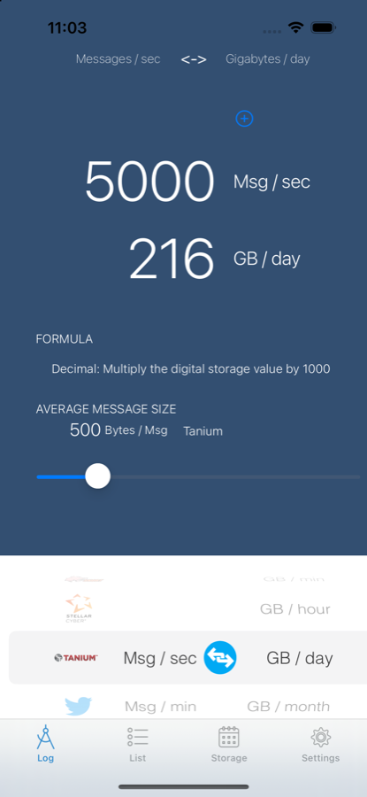

01 Conversion
Move between message rates and volumes — per second, hour, day, month or year; bits and bytes; decimal and binary. The unit confusion that causes sizing errors, removed.
Logcaliper turns a list of sources into the numbers you have to plan for: events per second, gigabytes per day, storage at retention, and what it costs.

Capacity planning is arithmetic done under pressure, usually in a meeting. Logcaliper does the arithmetic so the conversation can be about the answer.
Move between message rates and volumes — per second, hour, day, month or year; bits and bytes; decimal and binary. The unit confusion that causes sizing errors, removed.
Build a list of the sources you will actually collect from, set compression, indexing and retention, and get the daily volume, the storage it needs and the cost.
Put a number in human terms. A gram of DNA holds about nine million Blu-rays; a petabyte is so many years of 4K video. Useful for the slide, and for intuition.
The average event size is what sizing lives or dies on, and it varies by more than a factor of ten between sources. Logcaliper ships measured averages so you are not guessing.
| Source | Category | Avg bytes |
|---|---|---|
| Netskope Alert | Proxy | 2,591 |
| Windows Event Log | Windows servers | 2,413 |
| Apache Kafka | Application | 2,000 |
| Oracle Database | Database | 1,030 |
| Stellar Cyber Interflow | SIEM | 1,000 |
| Cisco ISE | Servers | 970 |
| Cisco Netflow v9 | Network flows | 814 |
| Windows Server 2016 | Windows servers | 800 |
| Crowdstrike | Managed endpoint | 540 |
| Active Directory | Application | 300 |
| Apache Hadoop | Distributed system | 192 |
| Android | Mobile OS | 138 |
Collecting from something that is not in the list? tell me and it can go in the next release.
Logcaliper is free because it is useful to people, and that is the whole return. Engineers have put it to work in their own write-ups:
IBM, Think 2018. Logcaliper cited as a sizing aid for QRadar capacity planning.
A practitioner write-up using Logcaliper to estimate daily indexing volume.
A source you collect from that is not in the catalogue, a number that does not match what you measure, a mode that should exist. All of it is welcome.